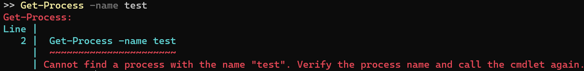
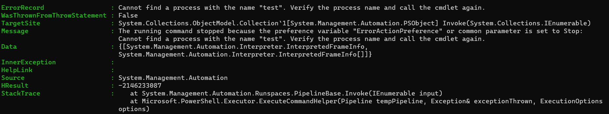
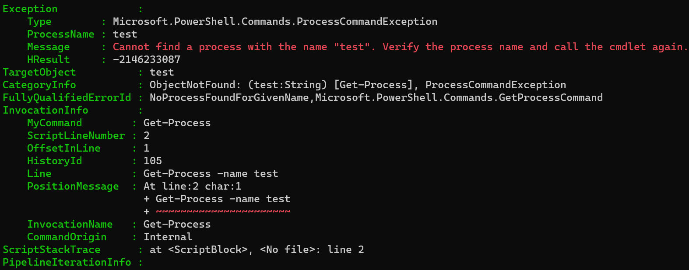

Learning objectives
- Distinguish terminating from non-terminating errors.
- Use
try,catch, andfinallyto handle expected failures. - Use
throwto signal a failure detected by your own script. - Produce useful error, warning, verbose, and information messages.
Prerequisites
- Familiarity with conditions, loops, and parameterised scripts.
Why exception handling matters
A command can succeed even when its result is unsuitable for the next step.
For example, a backup script may find that its destination is not ready.
Error handling lets the script stop that operation and explain the problem.
Run the new throw examples in a fresh PowerShell 7 session with the default
$ErrorActionPreference of Continue.
References
Everything you wanted to know about exceptions
What is Exception handling
Exception handling in PowerShell refers to the process of dealing with errors or exceptional situations that may occur during the execution of a script or a command. When a script encounters an error, it generates an exception. Without proper handling, these exceptions can cause the script to terminate abruptly, making it challenging to diagnose and fix issues.
PowerShell provides several mechanisms for exception handling:
Try-Catch-Finally:Try: Contains the code that might generate an exception.Catch: Contains the code to run if a specific type of exception occurs.Finally: Contains code that runs regardless of whether an exception occurred or not.
try {
# Code that might throw an exception
}
catch {
# Code to handle the exception
}
finally {
# Code that always runs, whether an exception occurred or not
}
Try {
4 / 2
}
Catch{
Write-Host 'Calculation error.'
}
finally {
Write-Host 'Final execution'
}
throw: Signals a failure detected by your own code. See Signal your own errors with throw for complete examples.Try-Catch with Specific Exception Types: You can catch specific types of exceptions to handle them differently.
try {
# Code that might throw an exception
}
catch [System.IO.IOException] {
# Code to handle IOException
}
catch [System.Exception] {
# Code to handle other types of exceptions
}
ErrorActionPreference: Effective exception handling helps improve the robustness and reliability of PowerShell scripts by allowing them to gracefully handle unexpected situations.
$ErrorActionPreference = "Stop"
Error messages
When you run Windows PowerShell commands, you sometimes receive error messages. Large on-screen error messages can be intimidating, but they contain information you can use for troubleshooting. In most cases, viewing the full message will provide a good description of why the error occurred. Errors can occur for reasons such as:
- You made a mistake while entering code.
- You have run a query on an object that does not exist or has an error.
- You tried to communicate with a computer that is offline.
When errors occur, they are stored in the $Error array. The most recent error is always at index zero. When a new error is generated, it is inserted at $Error[0]and the index of other errors is incremented by one. It can be useful to view errors $Error when you need to review a previous error message.
For example, you can view the $Error most recent error message.
$Error is a special automatic variable in PowerShell that contains an array of error objects that represent the most recent errors. It stores the errors that occurred during the current session, with the most recent error at index 0.
You can access individual errors in the $Error array using indices. For example, $Error[0] gives you the most recent error, $Error[1] gives you the second most recent error, and so on.
Get-Process -name test

#last error - most recent error
$error[0]

#first error in the session
$error[-1]
Gets and displays the most recent error messages from the current session.
Get-Error

Type of error:
$Error[0].Exception.GetType().FullName
Microsoft.PowerShell.Commands.ProcessCommandException
Error info:
$Error[0].Exception | select *
Type : Microsoft.PowerShell.Commands.ProcessCommandException
ProcessName : test
TargetSite :
Message : Cannot find a process with the name "test". Verify the process name and call the cmdlet again.
Data : {}
InnerException :
HelpLink :
Source :
HResult : -2146233087
StackTrace :
PowerShell Message:
$Error[0].Exception.Message
Cannot find a process with the name "test". Verify the process name and call the cmdlet again.
Terminating vs non-terminating errors
In PowerShell, errors are categorized into two main types: terminating errors and non-terminating errors.
Terminating errors
Terminating errors are more severe and will halt the script's execution unless they are caught and handled by a try/catch block.
Try {
4 / 0
Write-Host 'Next command'
}
Catch{
Write-Host 'Calculation error.'
}
finally {
Write-Host 'Final execution'
}
Non-Terminating errors
Non-terminating errors are less severe and do not stop the execution of a script or command. They are often informational or warning messages that allow the script to continue running.
Non-terminating errors are typically represented by objects that are sent to the error stream (stream 2). You can use the -ErrorAction parameter to control how non-terminating errors are handled.
Try {
Get-ChildItem "c:\dirNotExits" -ErrorAction Continue
Write-Host 'Next command'
}
Catch {
Write-Output "Directory doesn't exist"
}
A non-terminating error can only be handled with a stopping error ErrorAction
Try {
Get-ChildItem "c:\dirNotExits" -ErrorAction Stop
Write-Host 'Next command'
}
Catch {
Write-Output "Directory doesn't exist"
}
Conclusion: It's important to note that not all cmdlets and functions generate non-terminating errors in all situations. Some cmdlets and functions may generate terminating errors in certain circumstances. The behavior depends on how the cmdlet or function is designed.
Signal your own errors with throw
Use throw when your script detects a condition that prevents an operation
from continuing correctly. The command used to inspect the condition may
have succeeded; your code decides whether the result is acceptable.
Typical reasons include an unavailable backup destination, insufficient
free space for an operation, or a configuration that is missing required data.
Use parameter attributes such as [ValidateRange()] for simple parameter
validation; use throw for checks on the operation's current state.
Stop with a clear message
throw creates a terminating error. With the default error preferences,
an uncaught throw stops the script. It does not close your terminal.
This single-line example deliberately raises an error; run it separately:
throw 'The backup destination is not ready.'
PowerShell displays the supplied message as an error. Exact formatting depends on the host. Write a message that identifies the failed condition and gives enough context to investigate it.
Throw when a state check fails
This example uses a simulated readiness value; it does not start a backup or change files:
$backupDestinationReady = $false
try {
if (-not $backupDestinationReady) {
throw 'The backup destination is not ready.'
}
'Destination check passed.'
}
catch {
"Backup cancelled: $($_.Exception.Message)"
}
finally {
'Destination check finished.'
}
'After the destination check.'
Expected output:
Backup cancelled: The backup destination is not ready.
Destination check finished.
After the destination check.
The throw skips the remaining statements in try and transfers control
to catch. Inside catch, $_ is the current error record, and
$_.Exception.Message contains the message. finally runs afterwards.
Because the error was handled, execution continues after the whole block.
With $backupDestinationReady = $true, the success message replaces the
catch message; finally and the last statement still run.
Throw a specific exception type
A named exception type lets a caller distinguish this failure from others.
[System.InvalidOperationException]::new(...) creates an exception object
for an operation that cannot proceed in its current state:
try {
throw [System.InvalidOperationException]::new(
'The backup destination is not ready.'
)
}
catch [System.InvalidOperationException] {
"Destination problem: $($_.Exception.Message)"
}
The output is Destination problem: The backup destination is not ready..
Use a specific catch before a general catch when you need different recovery
actions. If a catch cannot handle the problem, a bare throw inside it
rethrows the current error so a caller can handle it.
Choose between throw, Write-Error, and ErrorAction
| Technique | Purpose with default error preferences |
|---|---|
throw 'Message' |
Signal your own terminating failure. |
Write-Error 'Message' |
Report a non-terminating error and continue. |
-ErrorAction Stop |
Make a cmdlet's non-terminating errors catchable. |
Write-Warning 'Message' |
Display a warning while continuing. |
throw is a language keyword, so it does not take -ErrorAction.
It is already catchable without -ErrorAction Stop. The examples assume
default preferences; changing $ErrorActionPreference to SilentlyContinue
or Ignore can suppress propagation of throw errors.
Apply: Activity 3.1: throw an exception deliberately and Activity 3.2: catch a specific type.
$ErrorActionPreference
$ErrorActionPreference is a variable in PowerShell that determines how the shell responds to non-terminating errors. Non-terminating errors are those that allow the script to continue executing despite the error. This variable allows you to control whether these errors are displayed as messages, suppressed, or treated as terminating errors, which would halt the script.
Here are the possible values for $ErrorActionPreference:
Continue: This is the default value. The script will display error messages for non-terminating errors but continue executing.
$ErrorActionPreference = "Continue"
Get-process -name ProcessNotExisting; Write-Host 'Next Command executed...'
SilentlyContinue: This setting suppresses the error messages for non-terminating errors, and the script continues executing.
$ErrorActionPreference = "SilentlyContinue"
Get-process -name ProcessNotExisting; Write-Host 'Next Command executed...'
Inquire: This setting prompts the user for confirmation before taking any action in response to a non-terminating error.
$ErrorActionPreference = "Inquire"
Get-process -name ProcessNotExisting; Write-Host 'Next Command executed...'
Ignore: This setting ignores non-terminating errors and continues script execution.
$ErrorActionPreference = "Ignore"
Get-process -name ProcessNotExisting; Write-Host 'Next Command executed...'
# Default values
$ErrorActionPreference = "Continue"
Get-Variable -Name *preference -Exclude *confirm*,*whatif*,*progress*
Name Value
---- -----
DebugPreference SilentlyContinue
ErrorActionPreference Continue
InformationPreference SilentlyContinue
VerbosePreference SilentlyContinue
WarningPreference Continue
Parameter ErrorAction
By modifying the value of ErrorAction parameter of a cmdlet, you can tailor the standard error handling behavior of each cmdlet individually.
Get-Process -name test -ErrorAction
Break Continue Ignore Inquire SilentlyContinue Stop Suspend
Get-process -name test -ErrorAction Continue; Write-Host 'Next Command executed...'
Get-process -name test -ErrorAction SilentlyContinue; Write-Host 'Next Command executed...'
Get-process -name test -ErrorAction Stop; Write-Host 'Next Command executed...'
Get-Process -name test -ErrorAction SilentlyContinue
# if a directory already exists
New-Item c:\windows -ItemType Directory
New-Item c:\windows -ItemType Directory -ErrorAction SilentlyContinue
try, catch, finally
The try, catch, and finally blocks are used for exception handling. They provide a structured way to handle errors and respond to exceptional conditions during script execution.
Normal and error paths
flowchart TD
A["try: run the operation"] --> B{"Terminating error?"}
B -- No --> D["finally: cleanup"]
B -- Yes --> F{"Matching catch?"}
F -- Yes --> C["catch: handle the error"]
F -- No --> D
C --> D
D --> E["Continue after handling, or propagate an unhandled error"]
finally runs during normal execution and while a terminating error unwinds.
Use -ErrorAction Stop when a cmdlet's non-terminating error needs to be
caught; an unmatched terminating error still propagates.
Try Block:- The try block contains the code that might generate an exception.
- If an exception occurs within the try block, PowerShell looks for a corresponding catch block to handle the exception.
try {
# Code that might throw an exception
}
Catch Block:- The catch block is used to catch and handle specific types of exceptions.
- It contains the code that should run when an exception of the specified type occurs in the corresponding try block.
- You can have multiple catch blocks, each handling a different type of exception.
- The Catch Block only works when you assign Stop to the ErrorAction with a non terminating error.
try {
# Code that might throw an exception
}
catch {
# Code to handle the exception
}
or, to catch specific exception types:
try {
# Code that might throw an exception
}
catch [System.IO.IOException] {
# Code to handle IOException
}
catch [System.Exception] {
# Code to handle other types of exceptions
}
Finally Block:- The -finally block contains code that runs regardless of whether an exception occurred in the try block or not.
- It is useful for cleanup tasks or for ensuring that certain code is executed even if an exception occurs.
try {
# Code that might throw an exception
}
catch {
# Code to handle the exception
}
finally {
# Code that always runs, whether an exception occurred or not
}
Example - Try_Catch_Example01.ps1:
try {
Foute_Opdracht
} catch {
"Fout"
}
try {
Write-Host("Correcte opdracht")
} catch {
"Fout"
}
try {
Write-Host("Correcte opdracht")
} catch {
"Fout"
} finally{
"Einde"
}
example - ExampleErrActionPrefContent.ps1:
# Set the error action preference to Stop
$ErrorActionPreference = "Stop"
Write-Host 'Test with $ErrorActionPreference = "Stop"'
Read-Host
# Attempt to get the contents of a non-existent file
try {
Get-Content -Path "NonExistentFile.txt"
Write-Host "execution continues"
}
catch {
# This block will be executed because the error action preference is set to Stop
Write-Host "An error occurred: $_"
}
# Set the error action preference back to Continue, default value
$ErrorActionPreference = "Continue"
Write-Host
Write-Host 'Test with $ErrorActionPreference = "Continue"'
Read-Host
# Attempt to get the contents of a non-existent file
try {
Get-Content -Path "NonExistentFile.txt"
Write-Host "execution continues"
}
catch {
# This block will be executed because the error action preference is set to Stop
Write-Host "An error occurred: $_"
}
Catch multiple, specific exceptions
Example - Try_Catch_Stop_Example.ps1:
Param (
[string][Parameter(Mandatory)]$berekening
)
try{
Invoke-Expression $berekening -ErrorAction Continue
} catch [DivideByZeroException]{
Write-Host “Divide by zero exception”
} catch [System.Net.WebException],[System.Exception]{
Write-Host “Other exception”
} finally{
Write-Host “cleaning up ...”
}
Example - .\Try_Catch_Stop_Find_Catch.ps1:
try {
#Get-Content "NonExistentFile.txt"
Get-Content "NonExistentFile.txt" -ErrorAction Stop
#Get-Content "NonExistentFile.txt" -ErrorAction SilentlyContinue
Write-Host 'Next command' -ForegroundColor Green
}
<# catch [System.Management.Automation.ItemNotFoundException]{
Write-Host "item not found error!!!!!" -ForegroundColor Blue
} #>
catch {
Write-Host "Alternative block is executed." -ForegroundColor Blue
#Write-Host "An error occurred: $_"
#$_.Exception.Message
#Write-Host $error[0].Exception.Message
Write-Host $error[0].Exception.GetType().FullName -ForegroundColor Blue
}
Write-Host 'And the script continues'
.\Try_Catch_Stop_Find_Catch.ps1
Alternative block is executed.
System.Management.Automation.ItemNotFoundException
And the script continues
Example - .\ExampleTerminatingError.ps1:
# example of a terminating cmdlet
# -ErrorAction continue to display the catch error
## Example of a terminating error cmdlet
## -ErrorAction stop is not needed to catch error
## next command not executed, because of the terminating cmdlet
Param (
[string][Parameter(Mandatory)]$berekening
)
try {
# Terminating error cmdlet
# ErrorAction stop is not needed to catch the error
Invoke-Expression $berekening -ErrorAction Continue
# The next command will not be executed during a Termination error
Write-Host 'Next command'
}
catch [DivideByZeroException] {
Write-Host “Divide by zero exception” -ForegroundColor Blue
}
catch [System.Net.WebException], [System.Exception] {
Write-Host “Other exception” -ForegroundColor Blue
}
catch {
Write-Host “Other exception” -ForegroundColor Blue
}
finally {
Write-Host “cleaning up ...”
}
Write-Host "Script continues..."
.\ExampleTerminatingError.ps1 6/2
3
Next command
cleaning up ...
Script continues...
.\ExampleTerminatingError.ps1 6/0
Divide by zero exception
cleaning up ...
Script continues...
Example - .\ExampleNonTerminatingError.ps1:
## Example of a non terminating error cmdlet
## -ErrorAction SilentlyContinue will not catch the error, next command executed
## -ErrorAction stop to display the catch error, next command not executed
try {
Get-Item -Path "C:\NonExistentFile.txt" -ErrorAction SilentlyContinue
Write-Host 'Next command'
}
catch [System.Management.Automation.ItemNotFoundException] {
Write-Host “File does not exists” -ForegroundColor Blue
}
catch {
Write-Host “Other exception” -ForegroundColor Blue
}
finally {
Write-Host “cleaning up ...”
}
Write-Host "Script continues..."
.\ExampleNonTerminatingError.ps1
Next command
cleaning up ...
Script continues...
try {
Get-Item -Path "C:\NonExistentFile.txt" -ErrorAction Stop
Write-Host 'Next command'
}
catch [System.Management.Automation.ItemNotFoundException] {
Write-Host “File does not exists” -ForegroundColor Blue
}
catch {
Write-Host “Other exception” -ForegroundColor Blue
}
finally {
Write-Host “cleaning up ...”
}
Write-Host "Script continues..."
.\ExampleNonTerminatingError.ps1
File does not exists
cleaning up ...
Script continues...
Parameter Exception
Example - DeclareParameterValidate.ps1:
param(
[ValidateSet("Cow","Dog","Cat",ErrorMessage="Animal {0} is not among list")]
[String]$Animal = "Dog"
)
Write-Output "$Animal is Pet Animal"
.\DeclareParameterValidate.ps1 Donky
DeclareParameterValidate.ps1: Cannot validate argument on parameter 'Animal'. Animal Donky is not among list
Output preferences
# standard values - preferences
$VerbosePreference = "SilentlyContinue"
$InformationPreference = "SilentlyContinue"
$DebugPreference = "SilentlyContinue"
$ProgressPreference = "Continue"
$WarningPreference = "Continue"
# Write Preferences
#These commands use the Write-Verbose cmdlet to display a status message. By default, the message is not displayed.
#The second command uses the Verbose common parameter, which displays any verbose messages, regardless of the value of the $VerbosePreference variable.
write-Verbose "Detailed Message"
Write-Verbose "Detailed Message" -Verbose
$VerbosePreference = "Continue"
Write-Verbose "Copying file $filename"
$InformationPreference = "Continue"
Write-Information -MessageData "Processes starting with 'P'"
Write-Information -MessageData "Processes starting with 'P'" -InformationAction SilentlyContinue
Get-Process -Name p*
$message = "To filter your results for PowerShell, pipe your results to the Where-Object cmdlet."
Get-Process -Name p*
Write-Information -MessageData $message -Tags "Instructions" -InformationAction Continue
$DebugPreference = "Continue"
Write-Debug "Debug Message"
Write-Debug "Debug Message" -Debug
Write-Warning "Warning Message"
Write-Error "An error occurred"
Practice and self-check
Work through Part 3 of the exception-handson lab.
Activity 3.1 compares failed and passed state checks. Activity 3.2 practises
matching a thrown exception to a specific catch. The Part 5 challenge
combines throw, typed catches, result objects, and finally.
Summary
Use throw when your code detects a condition that prevents an operation
from proceeding. Give the error a clear message and use a specific exception
type when callers need to distinguish failures. Handle terminating errors
with try and catch, and use finally for cleanup. An error that has
been caught does not automatically stop the rest of the script.